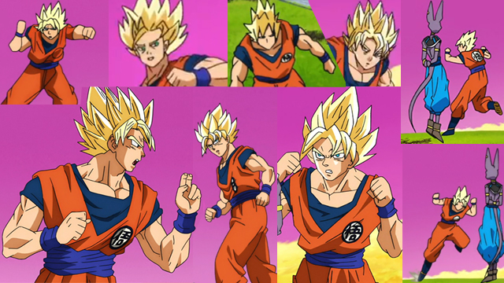

Naoki Tate

Naoki Tate es un animador con controversia. Su manera de entender los cuerpos y su reacción a golpes es de otro mundo. Anima todo de una manera muy fluida. Pero también es un animador con muy poco detalle y siempre intenta crear curvas a todo lo que dibuja
Lleva animando para Dragon Ball desde Dragon Ball Z y en One Piece su nombre se hizo reconocido mundialmente por lo dicho anteriormente
Desgraciadamente, la producción pésima de Dragon Ball Super hizo una mancha en su nombre. El episodio 5 es uno de los episodios peor animados de la historia, y justamente el era el supervisor de animación

Pero con el tiempo se convirtió en uno de los mejores animadores del momento
Aquí te dejo un vídeo que explica todo sobre Tate cortesía de AnimeAjay, en inglés